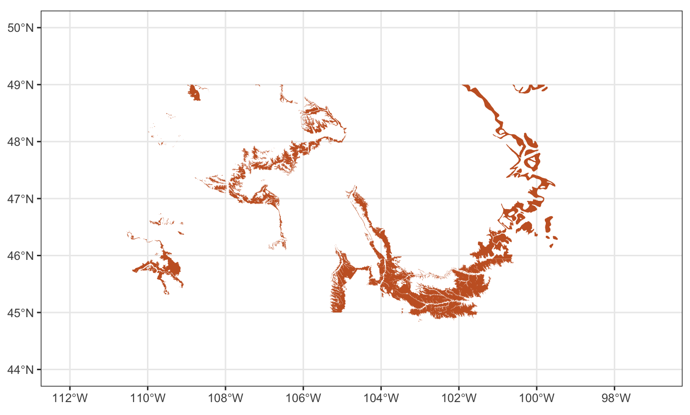
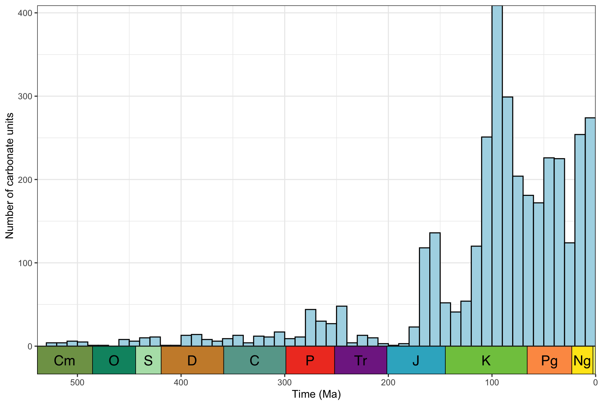

The goal of rmacrostrat is to streamline and improve accessibility to the geological database Macrostrat. The package provides functionality for querying the database via the dedicated application programming interface (API) and retrieving various geological data (e.g. lithostratigraphic units) and definitions/metadata associated with those data and Macrostrat more broadly.
Development team
- Lewis A. Jones, Universidade de Vigo
- William Gearty, American Museum of Natural History
- Christopher D. Dean, University College London
- Bethany J. Allen, ETH Zürich
Installation
(PENDING SUBMISSION TO CRAN) The stable version of rmacrostrat can be installed from CRAN using:
install.packages("rmacrostrat")You can install the development version of rmacrostrat from GitHub with:
# install.packages("devtools")
devtools::install_github("palaeoverse/rmacrostrat")Example usage
A minimal example of getting and plotting outcrop data for the Hell Creek formation:
# Load libraries
library(rmacrostrat)
library(ggplot2)
library(sf)
# Get data for the chosen formation
hc_def <- def_strat_names(strat_name = "Hell Creek", rank = "Fm")
# Get spatial outcrop data for the formation
hc <- get_map_outcrop(strat_name_id = hc_def$strat_name_id, sf = TRUE)
# Plot the map
ggplot() +
geom_sf(data = hc, fill = "#C7622B", lwd = 0) +
coord_sf(xlim = c(-112, -97), ylim = c(44, 50)) +
theme_bw()
A minimal example of getting and plotting the number of carbonate units through time for North America:
# Load libraries
library(rmacrostrat)
library(ggplot2)
library(deeptime)
# Get all carbonate units for North America
carbonate <- get_units(environ_type = "carbonate",
interval_name = "Phanerozoic",
project_id = 1)
# Add mid age for units
units$mid_age <- (units$b_age + units$t_age) / 2
# Plot data
ggplot(units, aes(x = mid_age)) +
geom_histogram(binwidth = 10, center = 5,
color = "black", fill = "#add8e6") +
scale_y_continuous("Number of carbonate units") +
scale_x_reverse("Time (Ma)", limits = c(538.8, 0)) +
theme_bw() +
theme(legend.title = element_blank(),
legend.position.inside = c(0.1, 0.9)) +
coord_geo()
How to contribute?
If you are interested in contributing to the rmacrostrat R package, you can do so by following these guidelines. We have also adopted a set of standards and structure to broadly follow for contributing to Palaeoverse R packages. If you would like to contribute to rmacrostrat, we strongly advise reading this document.
Code of Conduct
As with any community project, society, or meeting we feel it is important to established some expectations of behaviour in the rmacrostrat community. Please read our code of conduct, and reach out if you ever face any issues. Everyone has the right to live and work in a harassment-free environment.